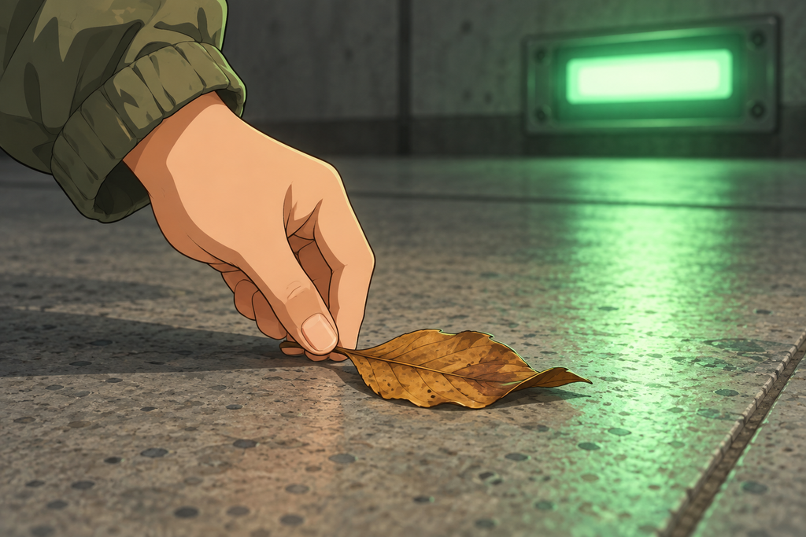
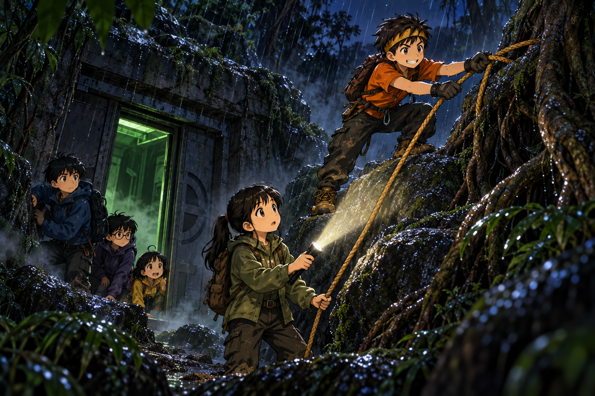

อากาศกำลังหมด
เวลาอ่านประมาณ 12 นาที · Air / Ventilation / Survival
ไฟดวงที่ห้ายังสว่างค้างอยู่บนผนัง
เด็กทั้งห้ายืนมองมันอยู่นานกว่าที่ควร จนนนท์เป็นคนตัดบทเอง
“เราจะไม่ยืนเดากันทั้งคืน” เขาพูด “ถ้ามันเป็นเซนเซอร์เสีย มันก็จะเสียอยู่ตรงนั้นพรุ่งนี้เหมือนกัน”
“แล้วถ้าไม่ใช่” ต้นกล้าถาม
“ถ้าไม่ใช่ มันก็ยังอยู่ตรงนั้นพรุ่งนี้เหมือนกัน”
ต้นกล้าเปิดปากจะเถียง แล้วก็ปิดลง เพราะเถียงไม่ออก
พวกเขาย้ายที่นั่งไปรวมกันใกล้โคนบันได เป็นจุดที่นนท์เลือกไว้ตั้งแต่ตอนลงมา เพราะถ้าต้องขึ้นข้างบนก็ขึ้นได้ทันที ปั้นวางสมุดบนตัก ต้นกล้าวางโทรศัพท์คว่ำหน้าจอลงเพื่อประหยัดไฟ เหลือแต่โคมฉุกเฉินสีเขียวที่หรี่ ๆ เหนือหัว
ฟ้าหาว
“ง่วงแล้วเหรอ” มีนาถาม
“ไม่รู้ค่ะ” ฟ้าตอบ “ง่วงแบบแปลก ๆ”
ตอนนั้นยังไม่มีใครคิดอะไร เพราะพวกเขาเดินมาสองวัน นอนกลางป่ามาคืนหนึ่ง แล้วเพิ่งลงบันไดยี่สิบสามขั้นมาเจอเครื่องที่พิมพ์ข้อความหาพวกเขา ใครจะไม่ง่วง
1
ครึ่งชั่วโมงต่อมา นนท์เอามือกดขมับตัวเอง
“ปวดหัวหรือเปล่า” มีนาถาม
“นิดหนึ่ง” เขาตอบ “คงเพราะอ่านแผนที่ในที่มืดทั้งวัน”
ต้นกล้าที่นั่งพิงผนังอยู่ลุกขึ้นเดินไปมาสองรอบ แล้วนั่งลงใหม่ แล้วก็ลุกขึ้นอีก
“นายนั่งนิ่ง ๆ ได้ไหม” ปั้นถาม
“เรานั่งอยู่”
“นายลุกไปสามรอบแล้ว”
“ก็นั่งแล้วอึดอัด” ต้นกล้าตอบเสียงแข็งกว่าปกติ “หายใจไม่ค่อยอิ่ม”
มีนาเงยหน้าขึ้นมองเขา เสียงนั้นไม่เหมือนต้นกล้าที่เธอรู้จักมาสองวัน
ปั้นก้มลงจดตัวเลขรอบใหม่ลงสมุด เขานับจังหวะพื้นสั่นทุกสิบเอ็ดวินาที นับแล้วคูณ นับแล้วบวก
“ตั้งแต่ลงมา พื้นสั่นไปแล้ว…” เขาหยุด แล้วเริ่มใหม่ “สี่สิบสองครั้ง คูณสิบเอ็ด เท่ากับ…สี่ร้อยกว่าวินาที”
เขามองตัวเลขของตัวเองอยู่สองสามวินาที
“ไม่ใช่” เขาพูด “สี่สิบสองคูณสิบเอ็ดได้สี่ร้อยหกสิบสอง แต่เราลงมาตั้งแต่ห้าโมงสี่สิบเอ็ด ตอนนี้หกโมงห้าสิบสาม มันควรจะเป็นเกือบสี่พันวินาที”
เขานับซ้ำอีกครั้ง แล้วนับซ้ำอีกครั้ง
“เรานับผิด” ปั้นพูดเบา ๆ “นับผิดตั้งแต่ต้น”
ห้องเงียบลงทันที
ปั้นไม่นับผิด นั่นไม่ใช่ความมั่นใจของเขา นั่นเป็นสิ่งที่ทุกคนในทีมรู้มาตั้งแต่วันแรก เขานับขั้นบันไดได้ทั้งที่ไฟส่องไม่ถึง เขาจับเวลาเสียงนกหวีดได้แม่นถึงวินาที
นนท์ลุกขึ้นยืนช้า ๆ
“ปั้น เอาสมุดมาให้ดูหน่อย”
ลายมือในสองหน้าสุดท้ายเริ่มเอียงลงกว่าหน้าก่อน ๆ และมีตัวเลขที่เขียนทับกันอยู่สามจุด
“มีใครปวดหัวอีกไหม” นนท์ถาม
“หนูค่ะ” ฟ้ายกมือ “ตุบ ๆ อยู่ข้างหลังตา”
“เราด้วย” ต้นกล้าตอบ “แต่เราคิดว่าเราแค่หิว”
มีนาเอามือแตะลำคอตัวเอง แล้วนับลมหายใจของตัวเองเงียบ ๆ
“เราหายใจเร็วกว่าปกติ” เธอพูด “ทั้งที่นั่งอยู่เฉย ๆ”
2
มีนาเป็นคนแรกที่ลุกขึ้น
เธอค้นกระเป๋าจนได้ใบไม้แห้งที่เก็บไว้ตั้งแต่ตอนทดสอบลมหน้าประตู แล้วเดินไปนั่งลงตรงพื้นใกล้โคนบันได ตรงจุดเดียวกับที่เมื่อตอนเย็นใบไม้ถูกดูดเข้าไปข้างในช้า ๆ
เธอวางมันลง
ทุกคนก้มดู
ใบไม้ไม่ขยับเลย
“ลองที่หน้าประตูขวาสิ” นนท์บอก
เธอย้ายไปวางใกล้ช่องใต้ประตูบานขวา
ใบไม้สั่นนิดหนึ่ง แล้วก็นิ่ง
“แต่พัดลมยังทำงานอยู่นะ” ปั้นพูด เขาเอาหูแนบใกล้ประตูโดยไม่แตะมัน “ยังได้ยินเสียงหึ่งอยู่เลย”
“นั่นแหละปัญหา” มีนาลุกขึ้นยืน
เธอยืนมองห้องทั้งห้องอยู่ครู่หนึ่ง มองประตูสามบาน มองท่อบนเพดาน แล้วมองขึ้นไปตามบันไดจนถึงช่องสี่เหลี่ยมดำ ๆ ข้างบนสุด
“ตอนเย็นใบไม้ขยับเข้าไป แปลว่ามีลมไหล” เธอพูด “ตอนนี้พัดลมยังดูดอยู่ แต่ไม่มีลมไหลแล้ว แปลว่าอากาศที่มันจะดูดเข้าไปมันไม่มีมาแทน”
ต้นกล้าเกาหัว “ทำไมล่ะ ข้างบนก็มีอากาศเต็มป่าเลย”
“มีสิ” มีนาชี้ขึ้นไปทางบันได “แต่เราเปิดประตูไว้แค่ช่องแคบ ๆ จำได้ไหม”
ทุกคนเงยหน้าขึ้นมองพร้อมกัน
ช่องประตูบนสุดของบันไดยี่สิบสามขั้น เปิดอยู่แค่กว้างกว่าฝ่ามือนิดเดียว ตามที่พวกเขาตั้งใจทำไว้เองตอนบ่าย เพราะกลัวว่าถ้าเปิดกว้างแล้วจะมีอะไรเข้ามา หรือประตูจะปิดขังพวกเขา
“เราระวังไว้ถูกแล้วตอนนั้น” นนท์พูดช้า ๆ “แต่ตอนนั้นเรายังไม่ได้ลงมาอยู่ข้างล่างกันห้าคน”
“แล้วห้าคนหายใจกันมาเกือบชั่วโมงครึ่ง” ปั้นเสริม
ฟ้ามองช่องประตูเล็ก ๆ ข้างบนนั้น แล้วถามคำถามที่ทำให้ทุกคนต้องคิด
“แล้วอากาศเก่าของเรามันไปไหนคะ”
“พัดลมดูดไป” ปั้นตอบ
“แล้วอากาศใหม่เข้ามาทางไหน”
ปั้นเงียบ
“…ทางช่องแคบ ๆ นั่นทางเดียว”

ใบไม้ใบเดียวบอกได้ว่าอากาศในห้องนี้หยุดเดินแล้ว
3
นนท์นั่งลงกับพื้นแล้วเอาฝ่ามือกดหน้าผาก
“อธิบายให้เราเข้าใจอีกรอบ” เขาพูด “ช้า ๆ นะ หัวเราไม่ค่อยแล่น”
นั่นเป็นประโยคที่น่ากลัวที่สุดที่ทุกคนได้ยินมาทั้งวัน เพราะคนที่พูดคือคนที่หัวแล่นที่สุดในทีม
มีนาคุกเข่าลงตรงหน้าเขา
“อากาศที่เราหายใจออกไม่เหมือนอากาศที่เราหายใจเข้า” เธอพูด “ครูวิทย์ที่โรงเรียนเราเคยให้เป่าลมใส่น้ำปูนใส แล้วน้ำขุ่นขึ้น เพราะลมที่เราเป่าออกมามีคาร์บอนไดออกไซด์”
“แล้วไง” ต้นกล้าถาม
“ห้องนี้ปิด เราห้าคนหายใจออกมาเรื่อย ๆ ถ้าอากาศไม่ไหล คาร์บอนไดออกไซด์ก็ค่อย ๆ เยอะขึ้นในห้อง”
“แล้วมันทำให้ปวดหัวเหรอคะ” ฟ้าถาม
“ใช่” มีนาตอบ “ปวดหัว ง่วง หายใจเร็ว แล้วคิดเลขผิด”
ปั้นเงยหน้าขึ้นจากสมุดช้า ๆ
“เราไม่ได้โง่ลง” เขาพูด เหมือนกำลังพูดกับตัวเองมากกว่าพูดกับคนอื่น
“ไม่ได้โง่ลงเลย” นนท์ตอบ “นายเป็นสัญญาณเตือนภัยของเราต่างหาก”
ปั้นไม่ได้ตอบอะไร แต่เขาเก็บสมุดแล้วนั่งตัวตรงขึ้น
“ปั้นอยากลองจุดไม้ขีดดูไหม” ต้นกล้าเสนอ “ถ้าอากาศแย่ ไฟจะติดยากใช่ไหม”
“ใช่ เปลวไฟจะเล็กลงหรือดับ” ปั้นตอบ “แต่ไม้ขีดของเราชื้นหมดตั้งแต่เมื่อเช้าแล้ว”
“แล้วก็ห้ามจุดอะไรในห้องปิดอยู่ดี” มีนาเสริม “ไฟกินอากาศเหมือนเราแล้วยังปล่อยของเสียออกมาอีก ในห้องแบบนี้มันทำให้แย่ลง ไม่ใช่ดีขึ้น”
ต้นกล้ายกมือขึ้นทั้งสองข้าง “โอเค ไม่จุดอะไรทั้งนั้น”
🧠 หยุดคิดสักครู่
ห้องโถงมีทางเข้าออกทางเดียว คือช่องประตูแคบ ๆ บนสุดของบันได ส่วนพัดลมหลังประตูขวายังดูดอากาศออกไปเรื่อย ๆ
ถ้าเป็นเรา จะทำยังไง?
A. เปิดประตูภายในบานขวา เพื่อให้ลมจากห้องนั้นเข้ามาในห้องโถง
B. ทุกคนนอนนิ่ง ๆ ไม่พูดไม่ขยับ เพื่อประหยัดอากาศที่เหลือ
C. ขึ้นไปเปิดช่องประตูด้านนอกให้กว้างขึ้น ให้อากาศใหม่จากป่าไหลลงมาแทนอากาศที่ถูกดูดออกไป
เลือกไว้ในใจก่อน แล้วค่อยอ่านต่อนะ
4
“B” ต้นกล้าตอบทันที “นอนนิ่ง ๆ ก็ใช้อากาศน้อยลงสิ”
“ใช้น้อยลง แต่ยังใช้อยู่” มีนาตอบ “นอนนิ่งไม่ได้ทำให้อากาศเก่าหายไป มันแค่ทำให้แย่ลงช้ากว่าเดิม แล้วเราจะหลับไปพร้อมกันห้าคนในห้องที่อากาศแย่ขึ้นเรื่อย ๆ”
ต้นกล้าเงียบไปพักหนึ่ง “…อ๋อ”
“A ก็ไม่ได้” ปั้นพูด “เรายังไม่รู้ว่าหลังประตูขวามีอะไร ถ้าข้างในอากาศแย่กว่าข้างนอกอีก เราจะเปิดของที่ปิดมาไม่รู้กี่ปีใส่หน้าตัวเองห้าคน”
“แล้วมันจะแย่กว่าได้ยังไง” ฟ้าถาม “มันก็ห้องเหมือนกัน”
“ห้องที่ปิดนาน ๆ อากาศข้างในเปลี่ยนไปได้” มีนาตอบ “อาจมีก๊าซอย่างอื่นสะสม อาจมีเชื้อรา อาจไม่มีออกซิเจนพอ เราไม่มีทางรู้ด้วยการเปิดดู เพราะถ้าเปิดแล้วผิด เราจะรู้ตอนที่แก้ไม่ได้แล้ว”
นนท์ยกมือขึ้นช้า ๆ “C”
ทุกคนหันมามอง
“อากาศที่เราต้องการไม่ได้อยู่ในสถานีนี้” เขาพูด “มันอยู่ข้างบน เต็มป่าเลย เราแค่ปิดทางมันไว้เองตอนบ่าย”
“แต่พี่บอกเองว่าเปิดกว้างแล้วอันตราย” ฟ้าท้วง
“ใช่ เราบอกเอง” นนท์ตอบ “แล้วตอนนั้นก็ถูกแล้ว ตอนนั้นเรายืนอยู่ข้างนอก มีป่าทั้งป่าให้หายใจ แต่ตอนนี้เราอยู่ข้างล่าง สิ่งที่เคยปลอดภัยที่สุดกลายเป็นสิ่งที่อันตรายที่สุด”
เขามองทุกคน
“ของที่เราตัดสินใจไปแล้ว ต้องเอากลับมาคิดใหม่ได้ ถ้าสถานการณ์เปลี่ยน”
5
แผนไม่ยาก แต่ก็ไม่ง่าย
ประตูด้านนอกหนัก และวงล้อกับรากไม้ที่ผูกเชือกไว้อยู่สูงกว่าหัวของทุกคน ตอนบ่ายพวกเขาผูกมันไว้ตอนที่ยังมีแสง ตอนนี้ข้างนอกมืดสนิท
ปัญหาที่สองคือเชือก พวกเขามีเส้นเดียว และปลายอีกด้านผูกอยู่กับราวบันไดตามที่นนท์ทำไว้เพื่อกันประตูปิด ถ้าจะใช้เชือกผูกประตูให้อ้ากว้างขึ้น ก็ต้องแก้ปลายที่ราวบันไดออก
“ใครขึ้นไป” ต้นกล้าถามแบบที่รู้คำตอบอยู่แล้ว
“นายกับมีนา” นนท์ตอบ “นายปีนเก่งที่สุด มีนาถือไฟแล้วคอยดูนายจากข้างล่าง”
“แล้วพี่ล่ะคะ” ฟ้าถาม
“เราอยู่ข้างล่างกับฟ้ากับปั้น” นนท์ตอบ “หัวเรายังไม่แล่น เราไม่ขึ้นไปทำงานบนที่สูงตอนนี้”
ไม่มีใครเถียง และไม่มีใครบอกว่าเขาอ่อนแอ นั่นเป็นเรื่องของการรู้ว่าตัวเองใช้ได้แค่ไหนในตอนนี้
ก่อนขึ้นไป นนท์ให้ต้นกล้าเอาปลายเชือกผูกรอบเอวตัวเองไว้ก่อน แล้วส่งปลายอีกด้านให้มีนาถือ
“ถ้านายลื่น มีนารับน้ำหนักนายไม่ได้ทั้งตัวหรอก” เขาพูดตรง ๆ “แต่มันจะช่วยให้นายไม่ตกไปไกล เพราะงั้นห้ามพึ่งเชือก ให้พึ่งเท้าตัวเอง”
ต้นกล้าพยักหน้า ครั้งนี้เขาไม่พูดอะไรเล่น ๆ เลยแม้แต่คำเดียว
ทั้งสองขึ้นบันไดยี่สิบสามขั้นไปช้า ๆ ลอดออกทางช่องแคบ ๆ แล้วป่ากลางคืนก็รับพวกเขาไว้ด้วยเสียงแมลงกับกลิ่นดินเปียก
อากาศข้างนอกเย็นและสดจนต้นกล้าหายใจเข้าลึกสองครั้งติดกันโดยไม่ได้ตั้งใจ
“โห” เขาพูด “เมื่อกี้ข้างล่างมันแย่กว่าที่เรารู้สึกเยอะเลย”
“นั่นแหละเรื่องน่ากลัวของมัน” มีนาตอบจากขั้นบันได “มันไม่มีกลิ่น ไม่มีสี แล้วเราก็ไม่รู้ตัว”
ต้นกล้ามองหารากไม้เส้นที่สูงกว่าเส้นเดิมขึ้นไป มันอยู่บนโขดหินเหนือประตู สูงเกินกว่าจะเอื้อมจากพื้น
เขาหาที่วางเท้าก่อน เหยียบร่องหินที่แห้งกว่า ทดลองน้ำหนักสองครั้งก่อนจะถ่ายน้ำหนักลงไปจริง มือจับรากที่หนาที่สุด ไม่ใช่เส้นที่ใกล้ที่สุด
“ช้า ๆ” มีนาพูดจากข้างล่าง ลำแสงไฟฉายนิ่งอยู่ที่มือของเขา ไม่ส่ายไปไหนเลย
สองก้าว สามก้าว แล้วเขาก็เอื้อมถึง
เขาคล้องเชือกข้ามรากเส้นบน ดึงทดสอบสามครั้ง แล้วค่อย ๆ ลงมา
จากนั้นทั้งสองช่วยกันดึง ประตูโลหะหนักเลื่อนออกไปทีละนิ้ว
แกร๊ก… แกร๊ก…
จนช่องประตูกว้างพอให้คนเดินผ่านได้สบาย

ป่ากลางคืน เชือกเส้นเดียว และคนที่ปีนเก่งที่สุดในทีม
6
สิ่งแรกที่เกิดขึ้นคือไม่มีอะไรเกิดขึ้น
ทั้งสองคนกลับลงมาข้างล่าง แล้วทุกคนก็นั่งรอ
มีนาวางใบไม้ลงตรงโคนบันไดอีกครั้ง
หนึ่งนาทีผ่านไป
ใบไม้ไม่ขยับ
“ไม่ได้ผลเหรอ” ต้นกล้าถามเสียงเบาลง
“รอ” มีนาตอบ
กึก… ครืนนนน…
พื้นสั่น เข็มแบตเตอรี่เด้งขึ้น เสียงพัดลมหลังประตูขวาหึ่งขึ้นมาชัดกว่าเดิม
แล้วใบไม้ก็กระดิกขึ้นจากพื้น พลิกไปครึ่งใบ แล้วค่อย ๆ เลื่อนไปทางประตูขวาช้า ๆ
ฟ้าเป็นคนแรกที่เห็น “มันเดินแล้วค่ะ!”
ไม่มีใครเชียร์ดัง ๆ เพราะไม่มีใครมีแรงเชียร์ แต่ทุกคนรู้สึกได้ว่าอะไรบางอย่างในห้องเปลี่ยนไป
“ยังไม่หายปวดหัวเลยนะ” ต้นกล้าพูด
“ยังไม่หายหรอก” มีนาตอบ “อากาศเสียไม่ได้หายไปในวินาทีเดียว มันต้องค่อย ๆ ถูกแทนที่ ให้เวลามันสักพัก”
พวกเขาให้เวลามันสักพัก
ปั้นนั่งเงียบอยู่ครู่หนึ่ง แล้วเปิดสมุดขึ้นมาใหม่
เขาเริ่มนับตั้งแต่ต้น จดเวลาที่ลงบันได จดเวลาปัจจุบัน ลบ แล้วหารด้วยสิบเอ็ด
เขาตรวจคำตอบสองรอบ
“สามร้อยหกสิบแปดครั้ง” เขาพูด แล้วเงยหน้าขึ้น “คราวนี้ถูกแล้ว”
นนท์ยิ้มออกมาเป็นครั้งแรกตั้งแต่ลงมาใต้ดิน “ดีใจที่ได้นายกลับมา”
พวกเขาจัดที่นอนกันใกล้โคนบันได ไม่ใช่ตรงกลางห้อง เพราะเป็นจุดที่อากาศใหม่ไหลลงมาถึงก่อนที่อื่น ปูเสื้อกันฝนรองพื้นเหมือนคืนก่อน แล้วแบ่งกันเฝ้าเป็นกะ ๆ คนละชั่วโมง
“กฎเดิม” นนท์บอก “ถ้าใครเริ่มปวดหัว หรือใครง่วงแบบแปลก ๆ ปลุกทุกคนแล้วขึ้นบันไดทันที ไม่ต้องเก็บของ”
“แล้วถ้าหนูง่วงแบบง่วงธรรมดาล่ะคะ” ฟ้าถาม
“ก็นอนได้เลย”
ฟ้าหลับก่อนใครภายในไม่ถึงห้านาที
มีนาเป็นกะแรก เธอนั่งพิงผนังโดยให้หลังหันเข้าหาบันได หน้าหันเข้าห้อง แล้ววางโทรศัพท์ของต้นกล้าไว้ข้างตัวโดยเปิดไฟไว้ดวงเล็กสุด
บนผนังฝั่งตรงข้าม ไฟดวงที่หนึ่งถึงสี่ยังดับอยู่
ดวงที่ห้ายังสว่างนิ่ง
มีนามองมันอยู่นานมาก แต่คืนนี้เธอไม่ได้กลัวมันเท่าเมื่อสองชั่วโมงก่อน เพราะคืนนี้เธอรู้แล้วว่าถ้ามีอะไรผิดปกติ ทีมนี้จับได้ทัน
เธอเงยหน้ามองขึ้นไปตามบันได
ข้างบนสุด ผ่านช่องประตูที่เปิดกว้างแล้ว เธอเห็นดาวอยู่สามดวง
อากาศเย็น ๆ จากป่าไหลลงมาตามขั้นบันไดมาถึงตรงที่เธอนั่งพอดี
🔬 วิทยาศาสตร์ในตอนนี้
ในห้องปิด ปัญหาที่มาก่อนออกซิเจนหมดคือคาร์บอนไดออกไซด์สะสม มันไม่มีสี ไม่มีกลิ่น และร่างกายเราไม่มีสัญญาณเตือนตรง ๆ อาการที่เกิดก่อนคือปวดหัว ง่วงผิดปกติ หายใจเร็วขึ้น และคิดช้าลงหรือคิดผิด
อาการคิดผิดคือสิ่งที่อันตรายที่สุด เพราะคนที่กำลังได้รับผลกระทบมักตัดสินใจได้แย่ลงโดยไม่รู้ตัว การรู้จักกันดีพอจะสังเกตได้ว่าเพื่อนผิดปกติ จึงสำคัญกว่าเครื่องมือใด ๆ
การระบายอากาศต้องมีทั้งทางเข้าและทางออก ถ้ามีแต่พัดลมดูดออกโดยไม่มีอากาศใหม่เข้ามาแทน ลมจะหยุดไหลทั้งระบบ วัตถุเบา ๆ อย่างใบไม้หรือกระดาษบางช่วยให้เรามองเห็นว่าอากาศยังเดินอยู่หรือไม่
การนอนนิ่งไม่ได้แก้ปัญหาอากาศ มันทำให้แย่ลงช้ากว่าเดิมเท่านั้น ทางแก้จริงคือทำให้อากาศถูกแทนที่ และการแทนที่นั้นต้องใช้เวลา ไม่ได้ดีขึ้นทันทีที่เปิดช่อง
อย่าเปิดพื้นที่ปิดที่ไม่รู้จักเพื่อหาอากาศ และอย่าจุดไฟในห้องปิด เพราะไฟใช้ออกซิเจนและปล่อยของเสียออกมาเหมือนกับเรา
จบตอนที่ 8
ช่วยให้ทีม ZERO เดินทางต่อ ☕
ถ้าตอนนี้ทำให้คุณสนุก สนับสนุนค่าเวลาเขียนและภาพประกอบได้ตามสะดวกครับ
สนับสนุนทีม ZERO